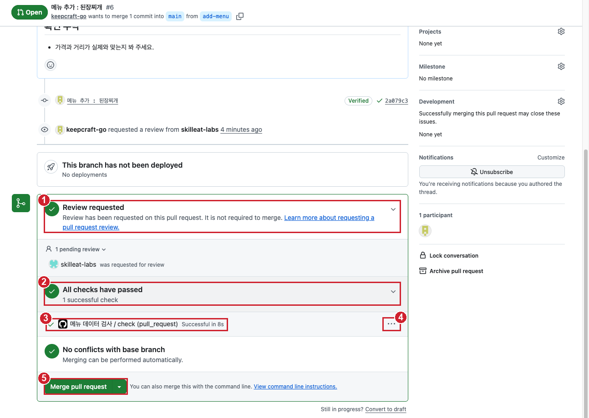

실습 3-2. 분기 만들고 PR 열기¶
이번 실습에서 할 것
main에서add-menu분기를 만들고, 그 분기에서 메뉴 1개를 추가합니다.- PR을 열어 짝꿍에게 리뷰를 요청하고, 자동 검사(
check)가 통과하는 것을 봅니다. - 일부러 쉼표를 지워 자동 검사가 실패하는 모습과 고치면 다시 통과하는 모습을 봅니다.
소요 시간 약 5분 실습 장소 개인 연습 리포지토리 lunch-practice 관련 교안 3교시 교안
준비¶
- 내 리포지토리
https://github.com/<내 아이디>/lunch-practice의 Code 탭을 열어 둡니다. - 3-1에서 짝꿍을 Collaborator로 초대했고 짝꿍이 수락한 상태여야 합니다.
시작 상태 확인하기¶
1교시 혼자 해보기에서 메뉴를 하나 추가했는지, 실습 1-3에서 김치찌개 가격을 바꿨는지에 따라 지금 파일 상태가 사람마다 다릅니다. 3교시 내내 이 값을 기준으로 확인하므로 먼저 메모합니다.
- Code 탭에서 분기 드롭다운이
main인지 확인합니다. site폴더 →menus.json을 클릭합니다.- 메뉴 줄(
{ "name": ...로 시작하는 줄)이 몇 개인지 셉니다. 1교시에 메뉴를 추가하지 않았다면 6개, 추가했다면 7개입니다. - 첫 줄 김치찌개의
price값을 봅니다. 실습 1-3에서 바꿨다면9500, 안 바꿨다면9000입니다. - 맨 아래 마지막 메뉴의 이름을 봅니다. 메뉴가 6개면
순두부찌개, 7개면 1교시에 내가 추가한 메뉴입니다. -
아래처럼 메모해 둡니다. 이 페이지와 3-3, 3-4, 3-5, 혼자 해보기에서 N은 여기 적은 메뉴 개수입니다.
확인: 메모에 N(6 또는 7), 김치찌개 가격(9000 또는 9500), 마지막 메뉴 이름이 적혀 있습니다. 어느 값이든 그대로 두고 진행합니다.
메모한 메뉴 이름 중에 비빔밥이 있다면
이번 실습에서 추가할 메뉴는 비빔밥입니다. 1교시 혼자 해보기에서 비빔밥을 이미 넣었다면 이름이 겹쳐 자동 검사가 실패합니다. 이때는 다른 메뉴를 추가해도 됩니다. 예를 들어 김밥으로 정했다면, 아래 STEP의 메뉴 줄, 커밋 메시지, PR 제목과 본문, 그리고 3-3, 3-5에 나오는 비빔밥을 모두 김밥으로 바꿔 읽고 진행합니다.
Starter의 원래 menus.json 보기
[
{ "name": "김치찌개", "category": "한식", "price": 9000, "distance": 300, "solo": true },
{ "name": "짜장면", "category": "중식", "price": 8000, "distance": 450, "solo": false },
{ "name": "돈카츠", "category": "일식", "price": 11000, "distance": 600, "solo": false },
{ "name": "샐러드볼", "category": "양식", "price": 10500, "distance": 200, "solo": true },
{ "name": "쌀국수", "category": "아시안", "price": 9500, "distance": 700, "solo": false },
{ "name": "순두부찌개", "category": "한식", "price": 8500, "distance": 350, "solo": true }
]
이번 실습의 흐름은 다음과 같습니다.
gitGraph
commit id: "지금 main"
branch add-menu
checkout add-menu
commit id: "비빔밥 추가"
commit id: "쉼표 지움 (실패)"
commit id: "쉼표 복구 (통과)"STEP 1. add-menu 분기 만들기¶
main은 그대로 두고, 작업용 이름표 add-menu를 만듭니다.
- Code 탭 파일 목록 왼쪽 위의 분기 드롭다운(분기 모양 아이콘과
main이라고 적힌 버튼)을 클릭합니다. -
드롭다운 위쪽 Find or create a branch...(분기 찾기 또는 만들기) 칸에 아래 이름을 입력합니다.
-
목록 아래에 나타난 Create branch: add-menu from main(main에서 add-menu 분기 만들기)을 클릭합니다.
확인: 분기 드롭다운 버튼의 글자가 main에서 add-menu로 바뀌었습니다. 파일 목록은 main과 똑같습니다. 분기는 이름표일 뿐이라 파일이 복사되지 않았기 때문입니다.
지금 분기가 add-menu인지 꼭 확인하세요
분기 드롭다운에 main이라고 보이는 상태에서 파일을 고치면 원본에 바로 커밋됩니다. 다음 STEP으로 가기 전에 드롭다운 글자가 add-menu인지 확인합니다.
STEP 2. menus.json에 메뉴 1개 추가하기¶
- 분기가
add-menu인 상태에서site폴더 →menus.json을 클릭합니다. - 오른쪽 위 연필 아이콘(Edit this file)을 클릭합니다.
-
맨 아래 마지막 메뉴 줄 끝으로 커서를 옮깁니다. 메모한 마지막 메뉴(보통
순두부찌개, 1교시에 메뉴를 추가했다면 그 메뉴)의 줄입니다. 줄 끝의}바로 뒤에 쉼표(,)를 하나 입력합니다. 순두부찌개라면 다음과 같습니다. -
Enter를 눌러 새 줄을 만들고, 아래 한 줄을 붙여 넣습니다. 이 줄 뒤에는 쉼표를 붙이지 않습니다. 마지막 메뉴이기 때문입니다.
메뉴 이름, 가격, 거리는 원하는 대로 바꿔도 됩니다. 단, 이미 있는 메뉴 이름과 겹치면 자동 검사에서 실패합니다.
고친 뒤 파일 전체는 아래와 같아야 합니다. 아래는 메뉴 6개로 시작한 경우의 예입니다. 김치찌개 price는 내 파일에 원래 있던 값(9000 또는 9500) 그대로이고, 1교시에 메뉴를 추가했다면 순두부찌개와 비빔밥 사이에 내 메뉴 줄(끝에 쉼표 있음)이 하나 더 있습니다.
[
{ "name": "김치찌개", "category": "한식", "price": 9000, "distance": 300, "solo": true },
{ "name": "짜장면", "category": "중식", "price": 8000, "distance": 450, "solo": false },
{ "name": "돈카츠", "category": "일식", "price": 11000, "distance": 600, "solo": false },
{ "name": "샐러드볼", "category": "양식", "price": 10500, "distance": 200, "solo": true },
{ "name": "쌀국수", "category": "아시안", "price": 9500, "distance": 700, "solo": false },
{ "name": "순두부찌개", "category": "한식", "price": 8500, "distance": 350, "solo": true },
{ "name": "비빔밥", "category": "한식", "price": 9000, "distance": 250, "solo": true }
]
파일 전체를 붙여 넣지 마세요
위 내용은 비교용입니다. 전체를 붙여 넣으면 1교시에 바꾼 김치찌개 가격과 1교시에 추가한 메뉴가 원래대로 돌아가 PR에 엉뚱한 변경이 섞입니다. 쉼표 하나와 새 줄 하나만 추가합니다.
확인: 원래 마지막 메뉴 줄 끝에 쉼표가 있고, 비빔밥 줄 끝에는 쉼표가 없고, 마지막 줄이 ]입니다. 메뉴 줄은 처음 메모한 N개보다 1개 많은 N+1개입니다.
STEP 3. add-menu 분기에 커밋하기¶
- 오른쪽 위 초록색 Commit changes...(변경 저장) 버튼을 클릭합니다.
-
Commit message 칸에 아래 내용을 입력합니다.
-
아래 선택지에서 Commit directly to the
add-menubranch(add-menu 분기에 바로 커밋)가 선택되어 있는지 확인합니다. 여기에main이 적혀 있다면 STEP 1로 돌아가 분기를 다시 확인합니다. - Commit changes 버튼을 클릭합니다.
확인: 파일 화면 위쪽 분기 드롭다운이 여전히 add-menu이고, 비빔밥 줄이 보입니다.
STEP 4. PR 만들기¶
- 위쪽 Code 탭을 클릭합니다.
- 파일 목록 위에 노란 배너 add-menu had recent pushes(add-menu에 최근 변경이 있습니다)가 보입니다. 오른쪽의 초록색 Compare & pull request(비교하고 PR 만들기) 버튼을 클릭합니다.
- 배너가 안 보이면 Pull requests 탭 → New pull request → compare 드롭다운에서
add-menu선택 → Create pull request를 클릭합니다.
- 배너가 안 보이면 Pull requests 탭 → New pull request → compare 드롭다운에서
- 화면 위쪽 분기 선택 칸이
base: main←compare: add-menu인지 확인합니다. 그 옆에 초록색 Able to merge(병합 가능)가 보이면 정상입니다. -
Add a title(제목) 칸에 아래 내용을 입력합니다.
-
Add a description(본문) 칸에 아래 내용을 입력합니다. 무엇을, 왜 바꿨는지 씁니다.
-
오른쪽 Reviewers(검토자) 옆 톱니바퀴 아이콘을 클릭하고, 짝꿍 아이디를 검색해 선택합니다. 빈 곳을 클릭해 창을 닫습니다.
- 초록색 Create pull request(PR 만들기) 버튼을 클릭합니다.
확인: 제목 옆에 초록색 Open 표시와 #번호가 붙은 PR 화면이 열렸습니다. 오른쪽 Reviewers에 짝꿍 아이디가 보입니다.
PR 번호가 1번이 아니에요
PR과 이슈는 같은 번호를 나눠 씁니다. 2교시 실습과 혼자 해보기까지 마쳤다면 이슈가 8개쯤 있어서, 이 PR은 #9처럼 그다음 번호를 받습니다. 번호는 사람마다 다르고, 정상입니다.
STEP 5. 자동 검사 결과 보기¶
PR을 만들면 Starter에 들어 있는 메뉴 데이터 검사가 자동으로 실행됩니다.
자동 검사는 GitHub 기능인가요, 누가 만든 건가요?
둘 다입니다. 검사 내용은 우리가 만든 코드이고, 그 코드를 정해진 때에 자동으로 돌려 주는 것이 GitHub 기능(GitHub Actions)입니다. 템플릿으로 리포지토리를 만들 때 아래 두 파일이 함께 복사되어 왔습니다.
| 파일 | 누가 만들었나 | 하는 일 |
|---|---|---|
.github/workflows/check.yml |
강사가 Starter에 넣어 둔 설정 | "PR이 열리거나 바뀌면 node scripts/check-menus.js를 실행하라"는 지시서. 이 폴더에 파일을 두면 GitHub가 읽고 따릅니다 |
scripts/check-menus.js |
강사가 Starter에 넣어 둔 검사 프로그램 | menus.json이 JSON 형식이 맞는지, 가격과 거리가 숫자인지, 메뉴 이름이 겹치지 않는지 확인 |
그래서 회사마다 검사 내용은 다릅니다. 맞춤법 검사, 문서 형식 검사, 보안 검사 등 원하는 검사를 코드로 만들어 같은 방식으로 붙입니다. 1교시에 본 웹페이지 배포(pages.yml)도 같은 원리로 돌아가는 자동 작업입니다.
-
PR 화면(Conversation 탭)을 아래로 내려, Merge pull request 버튼 위의 큰 상자(병합 상자)를 봅니다. 아래 그림처럼 생겼습니다.

번호 화면 뜻 ① Review requested 짝꿍에게 리뷰를 요청해 둔 상태. 아래에 1 pending review(리뷰 1건 대기 중)와 짝꿍 아이디가 보입니다② All checks have passed 자동 검사가 모두 통과했다는 뜻. 처음 20~40초는 노란 점과 Some checks haven't completed yet(아직 끝나지 않은 검사가 있습니다)이 보입니다 ③ 메뉴 데이터 검사 / check (pull_request) 검사 하나. Starter의 check.yml이 실행한 검사입니다④ ... 이 검사의 더 보기 메뉴 ⑤ Merge pull request 병합 버튼. 아직 누르지 않습니다. 짝꿍 리뷰를 받은 뒤 3-3에서 누릅니다 -
②가 초록 체크로 바뀔 때까지 기다립니다.
- ③의 검사 이름 메뉴 데이터 검사 / check (pull_request)를 클릭합니다. (화면에 따라 줄 오른쪽에 Details 링크가 보이면 그것을 눌러도 되고, ④ ...를 눌러 나오는 메뉴에서 들어가도 됩니다.)
- 검사 실행 화면(Actions 로그)이 열립니다. 단계 목록에서
Run node scripts/check-menus.js를 클릭해 펼칩니다.
확인: 로그에 아래 문장이 보입니다. 숫자는 처음 메모한 N보다 1 큰 N+1입니다(6개로 시작했으면 7, 7개로 시작했으면 8). 숫자는 사람마다 다릅니다.
브라우저의 뒤로 가기로 PR 화면에 돌아옵니다.
STEP 6. 일부러 실패시켜 보기¶
자동 검사가 실제로 실수를 잡는지 확인합니다. 쉼표 실수는 가장 흔한 실패 원인입니다.
- PR 화면 위쪽 Files changed(바뀐 파일) 탭을 클릭합니다.
site/menus.json오른쪽의 … 메뉴 → Edit file(파일 편집)을 클릭합니다.add-menu분기의 파일이 편집 화면으로 열립니다.- 비빔밥 바로 위 줄(원래 마지막 메뉴, 보통 순두부찌개) 끝의 쉼표(
,)를 지웁니다. -
Commit changes... → 메시지에 아래 내용 입력 → Commit directly to the
add-menubranch 확인 → Commit changes를 클릭합니다. -
PR의 Conversation 탭으로 돌아와 검사 상자를 봅니다.
확인: 잠시 뒤 빨간 X와 함께 All checks have failed(모든 검사 실패)가 보입니다. STEP 5처럼 검사 이름을 클릭해 로그를 열면 아래 문장이 있습니다.
왜 이렇게 하나요?
main을 바로 고쳤다면 이 실수가 곧바로 웹페이지를 깨뜨렸을 것입니다. 분기와 PR을 쓰면 실수가 main에 들어가기 전에 기계가 먼저 잡아 줍니다. 그래서 빨간 X가 떠도 원본은 안전합니다.
STEP 7. 다시 고쳐서 통과시키기¶
- STEP 6의 2번처럼 Files changed →
site/menus.json의 … → Edit file을 클릭합니다. - 비빔밥 바로 위 줄 끝
}뒤에 쉼표(,)를 다시 넣습니다. -
아래 메시지로
add-menu분기에 커밋합니다. -
Conversation 탭으로 돌아와 검사가 끝날 때까지 기다립니다.
확인: 검사 상자가 다시 초록 체크 All checks have passed로 바뀝니다. Conversation 탭 중간에는 커밋 3개(메뉴 추가, 쉼표 지우기, 쉼표 복구)가 순서대로 쌓여 있고, 각 커밋 옆에 빨간 X 또는 초록 체크가 붙어 있습니다.
STEP 8. Files changed에서 바뀐 줄 보기¶
- Files changed 탭을 클릭합니다.
site/menus.json의 변경 내용을 봅니다.
확인: 아래처럼 보입니다. 커밋은 3개였지만, Files changed는 main과 지금 add-menu의 최종 차이만 보여 줍니다.
| 표시 | 줄 | 뜻 |
|---|---|---|
빨간색 - |
쉼표 없는 원래 마지막 메뉴 줄 (보통 순두부찌개) | 지워진 줄 |
초록색 + |
쉼표 있는 같은 줄 | 추가된 줄 |
초록색 + |
비빔밥 줄 | 추가된 줄 |
쉼표 하나만 바꿔도 Git은 줄 단위로 비교하기 때문에 "그 줄을 지우고 새로 썼다"로 보입니다.
성공하면¶
-
add-menu분기가 있고, 그 분기의menus.json에 메뉴가 처음 메모한 N개보다 1개 많은 N+1개다 -
main의menus.json은 여전히 메뉴 N개다 (분기 드롭다운을main으로 바꿔 확인) - PR이
base: main←compare: add-menu로 열려 있고, Reviewers에 짝꿍이 있다 - 자동 검사가 빨간 X(실패)를 거쳐 지금은 초록 체크(통과)다
막히면¶
Create branch: add-menu from main이 안 보이고 Create branch: add-menu from add-menu처럼 다른 분기 이름이 보여요
드롭다운을 열기 전에 다른 분기를 보고 있었습니다. 드롭다운에서 먼저 main을 클릭해 main으로 돌아간 뒤, 다시 드롭다운을 열어 add-menu를 입력하세요.
실수로 main에 바로 커밋했어요
Commit changes 창에서 main이 선택된 채 저장한 경우입니다. 당황하지 않아도 됩니다.
main의menus.json을 다시 편집해 비빔밥 줄과 그 바로 위 줄 끝의 쉼표를 지우고main에 커밋합니다. 메시지 예:잘못 올린 비빔밥 되돌림- 분기 드롭다운에서
add-menu가 이미 있다면 그 분기로 바꾸고 STEP 2부터 다시 합니다.
노란 배너 Compare & pull request가 안 보여요
배너는 몇 분 뒤 사라집니다. Pull requests 탭 → New pull request → base는 main, compare는 add-menu를 고르고 Create pull request를 누르면 같은 화면이 나옵니다.
Reviewers 검색에 짝꿍이 안 나와요
짝꿍이 3-1의 초대를 아직 수락하지 않았습니다. Collaborator만 Reviewers에 지정할 수 있습니다. 짝꿍이 수락한 뒤 PR 화면 오른쪽 Reviewers의 톱니바퀴를 눌러 다시 지정하세요.
검사 상자가 안 보이거나 계속 노란 점이에요
- Actions 탭에서 메뉴 데이터 검사 워크플로가 실행 중인지 봅니다. 처음 실행은 1분 가까이 걸릴 수 있습니다.
- Actions 탭 왼쪽 목록에 메뉴 데이터 검사가 아예 없다면, 내 리포지토리가 Starter 템플릿으로 만든 것이 아닐 수 있습니다.
.github/workflows/check.yml파일이 있는지 확인하고, 없으면 강사에게 알려 주세요. - 검사가 실패가 아니라 회색으로 멈춰 있으면 페이지를 새로 고침합니다.
쉼표를 다시 넣었는데도 빨간 X예요
검사 로그의 [실패] 문장을 읽어 봅니다.
올바른 JSON 형식이 아닙니다: 비빔밥 줄 뒤에 쉼표가 붙어 있거나, 따옴표나}가 빠졌습니다. 위 STEP 2의 전체 내용과 한 줄씩 비교하세요.메뉴 이름이 겹칩니다: 이미 있는 메뉴 이름을 썼습니다. 1교시에 비빔밥을 추가했다면 이 경우입니다. 다른 이름(예:김밥)으로 바꾸세요.price(가격)는 0보다 큰 숫자여야 합니다: 가격을"9000"처럼 따옴표로 감쌌습니다. 숫자는 따옴표 없이 씁니다.
다음 실습으로 넘어가기 전에¶
- 이 PR은 병합하지 않고 열어 둡니다. 3-3에서 짝꿍이 리뷰한 뒤 병합합니다.
add-menu분기를 지우지 마세요.- 짝꿍도 같은 단계까지 왔는지 확인합니다. 3-3에서는 내가 짝꿍의 PR을 리뷰합니다.